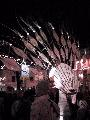
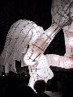

Burning the clocks isn't a long held tradition in Brighton, or the UK for that matter. It seems to have been a festival dreamt up about 6 or 7 years ago. It's to signify the Winter Solstice, and the days becoming longer. No matter, it was an interesting evening and there were a surprising number of people who turned out to watch the procession and the fireworks.
The Juicy Guide describes it as "It's a mix of Pagan celebration and pyromania in which lantern clocks representing the old year are cast onto a sculptural bonfire to bid the old year goodbye" (it used to be a New Years Eve celebration).
(15 images.)|
Start of the procession |
One of the many clocks |
Another clock | 
Peacock type thing |
|
The sun? |
Procession of clocks |
Moon thing |
Back of moon thing |
|
World |
Anyone for basketball? | 
Close up |
And again |
|
Burning of the clocks |
Fireworks and fire |
Fireworks |